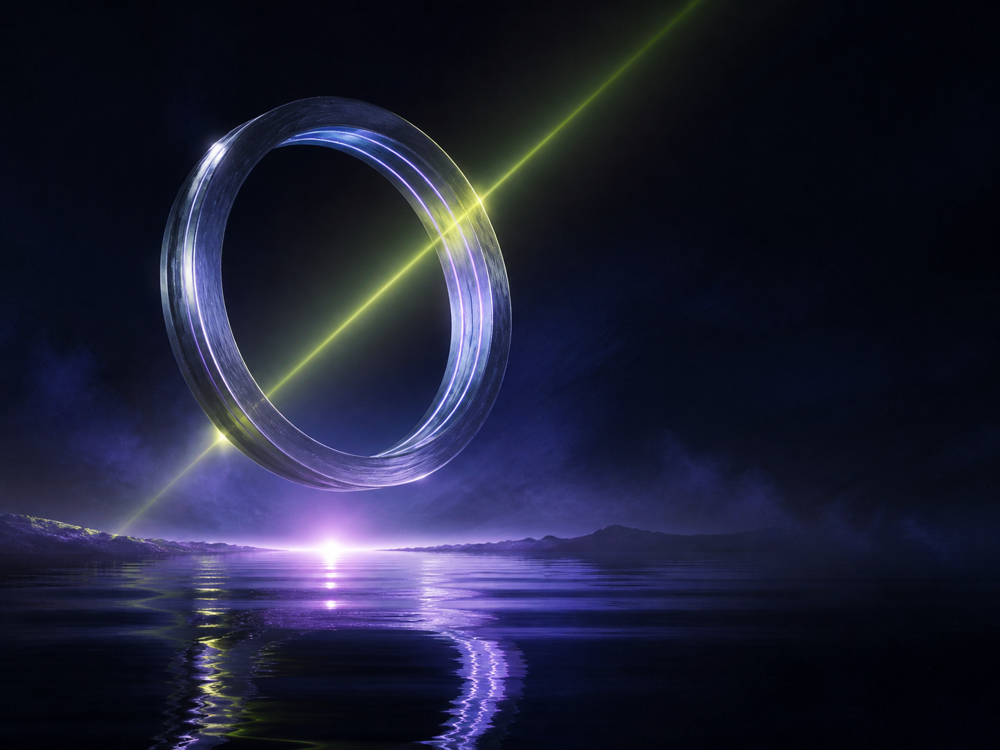
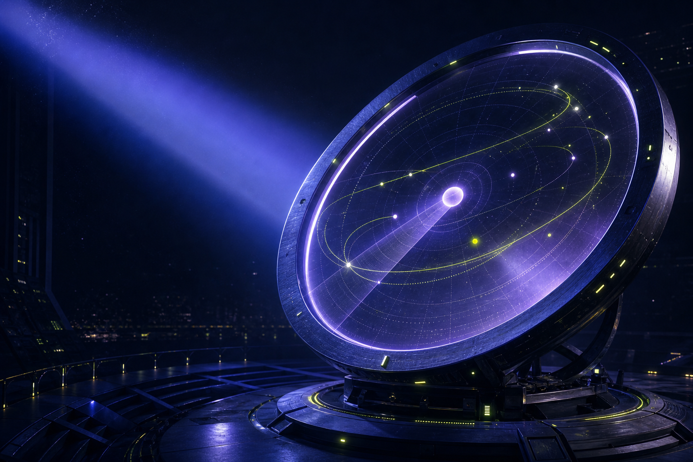
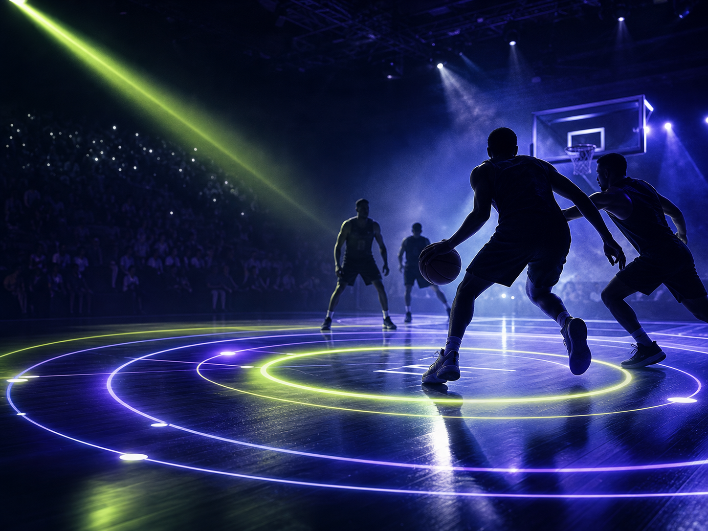

NUEVA FRECUENCIA OP / 014La última órbita
Cuando el cielo se abre, dos personas tienen una sola noche para decidir si vuelven.
MODELO 14 · ORBITAL PULSE
Una señal que se mueve con vos: cine, series, partidos y noches enteras para descubrir sin caer en lo mismo.

SEÑAL / 014 LAT 34°36' · 00:14:22Constelación / 01
El catálogo no es un laberinto. Es una constelación de historias listas para caer justo donde querés mirar.

NUEVA FRECUENCIA OP / 014Cuando el cielo se abre, dos personas tienen una sola noche para decidir si vuelven.
Señal abierta / 02
Entrá a un canal y dejá que la noche te encuentre en movimiento.

Serie · 2 temporadas
Documental · 78 min
Deslizá la señal
Tu forma de mirar / 03
Orbital Pulse te ayuda a elegir rápido y volver a lo bueno, estés donde estés y con quien quieras compartirlo.
Ritmo
Continuidad
Compañía
Una órbita / todos tus lugares
Activación / 04
La señal llega lista. Vos elegís desde dónde querés verla.
Mandanos un mensaje y te recomendamos el plan que mejor entra en tu casa.
Recibís tu acceso y lo abrís en el dispositivo que ya usás todos los días.
Elegí una historia, un partido o apretá play sin pensarlo tanto.
Elegí tu intensidad / 05
Planes simples para que la señal se acomode a tu forma de compartir.
Para empezar
$3.990 / mes
Una pantalla para tu rutina.
La más elegida
$6.490 / mes
La noche completa, compartida.
Para todos
$9.490 / mes
Una casa llena de historias.
Precios ilustrativos. Consultá disponibilidad y activación por WhatsApp.
Preguntas frecuentes / 06
Acceso al catálogo completo de películas, series, deportes, canales en vivo y contenido para compartir en familia.
Smart TV, celular, tablet, computadora, Chromecast y los dispositivos que ya usás para mirar.
Sí. Escribinos por WhatsApp y te ayudamos a gestionar la baja cuando lo necesites.
Elegí un plan, mandanos un mensaje y recibí tu acceso listo para entrar.
Tu próxima señal
Probá Orbital Pulse y encontrá la historia que estaba esperando cruzarse con vos.
Probar ahora por WhatsApp